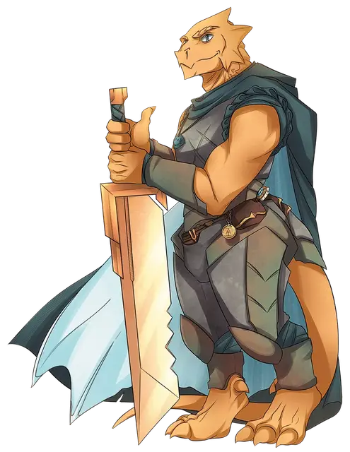

Донаар Блит'зен
Donaar Blit'zen
Средний Гуманоид (Драконорождённый), хаотично-добрый, именной НИП

Класс Доспеха 18 (латы)
Хиты 45 (7к8 + 14)
Скорость 30 футов
| мод | спас | ||
|---|---|---|---|
| СИЛ | 17 | +3 | +3 |
| ЛОВ | 8 | −1 | −1 |
| ТЕЛ | 14 | +2 | +2 |
| мод | спас | ||
|---|---|---|---|
| ИНТ | 10 | +0 | +0 |
| МДР | 10 | +0 | +2 |
| ХАР | 16 | +3 | +5 |
Навыки Запугивание +5, История +2, Проницательность +2, Убеждение +6
Сопротивление урону кислота
Чувства пассивное Восприятие 10
Языки Общий, Драконий, Орочий
Опасность 3 (700 опыта)
Бонус мастерства +2
Особенности
Чемпионский вызов (Перезаряжается после короткого или продолжительного отдыха). Бонусным действием Донаар заставляет каждое выбранное им существо, которое он видит в пределах 30 футов от себя, совершить спасбросок Мудрости Сл 13. В случае провала существо не может добровольно отойти от Донаара более чем на 30 футов. Этот эффект прекращается для существа, если Донаар становится недееспособен или умирает, или если существо перемещено от него более чем на 30 футов.
Использование заклинаний. Донаар является заклинателем 5-го уровня. Его базовой характеристикой является Харизма (Сл спасброска от заклинания 13, +5 к попаданию атаками заклинаниями). У него подготовлены следующие заклинания паладина:
• 1 уровень (4 ячейки): приказ [command], вызов на дуэль [compelled duel], лечение ран [cure wounds], гневная кара [wrathful smite];
• 2 уровень (2 ячейки): подмога [aid], клеймящая кара [branding smite], малое восстановление [lesser restoration], охраняющая связь [warding bond], область истины [zone of truth].
Действия
Мультиатака. Донаар делает две атаки Двуручным мечом или Кнутом.
Двуручный меч. . Рукопашная атака оружием: +5 к попаданию, досягаемость 5 футов, одна цель. Попадание: 10 (2к6 + 3) рубящего урона. Всякий раз, когда Донаар выбрасывает "1" или "2" на костях урона, он может перебросить кость и должен использовать новый бросок.
Кнут. . Рукопашная атака оружием: +5 к попаданию, досягаемость 10 футов, одна цель. Попадание: 5 (1к4 + 3) рубящего урона.
Кислотная рвота. Донаар извергает кислоту 30-футовой линией и шириной 5 футов. Каждое существо в этой линии должно совершить спасбросок Ловкости Сл 12, в случае провала получая 7 (2к6) урона кислотой или половину этого урона при успехе.
Описание
“Всем остыыыыыыть!”
Неуклюжий драконорожденный, принимающий решения в команде "С", Донаар Блит'зен - воплощение дерзкой уверенности и хладнокровия воина. Он известен своим яростным мастерством в бою и своей склонностью засыпать сразу после окончания боя (а также бесчисленным множеством других неподходящих моментов). Более заметной является уникальная физическая черта, присущая всем членам его клана - стильный хвост, который встречается редко и часто считается уродством среди драконорожденных.
Как и в случае с его хвостом, странная особенность наследия делает кислотное дыхание Донаара более характерным для рвоты, вызывая непреодолимую паранойю, что эта отрыжка может повредить его зубы. В качестве свидетельства своей одержимости гигиеной зубов Донаар назвал свой двуручный меч "Зубная щетка" , а свой хлыст "Зубная нить". Он всегда носит с собой настоящую зубную щетку (по имени Персиваль) и настоящую зубную нить.
Те, кто знает Донаара, быстро понимают, что хвастовство, которое характеризует его, включает в себя определенную долю искусственности. Когда юный драконорожденный покинул свой клан и семью ради приключений в чужих краях, он понял, что это дает прекрасную возможность заново открыть себя для людей, которые понятия не имели, каким он был когда-то. Таким образом, Донаар понял, что никакая бравада и компенсация не являются слишком большими - при условии, что он не оставляет никаких возможностей для того, чтобы незнакомые люди могли связаться с ним по этому поводу. Точно так же незнакомцы быстро приходят к пониманию того, что усиление самовосхваляющего чувства драконьего права Донаара позволяет на удивление легко завоевать его расположение.
Несмотря на свое легко поддающееся массированию тщеславие, драконорожденный иногда проявляет редкую черту бескорыстия. Наиболее примечательно, что Донаар в свободное от работы время служит крестным отцом молодого драконорожденного по имени Хронаар, который непреднамеренно запечатлелся в Донааре как родительская фигура, когда он присматривал за ней, пока она была в яйце.